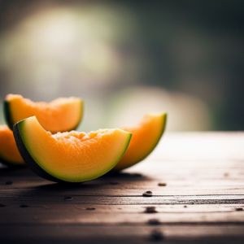

Fruits
Welcome to our farm, where we take pride in growing a variety of delicious and nutritious fruits. Our commitment to sustainable farming practices ensures that every bite of our fruit is bursting with natural flavor and goodness. From the orchard to your table, we offer a selection of fresh, hand-picked fruits that are perfect for snacking, baking, and cooking. Experience the taste of nature's bounty with our premium quality fruits.
Fruits for Sale

Apples

Oranges

Peaches

Strawberries

Blueberries

Raspberries

Cherries

Pears

Plums

Grapes

Watermelons
Cantaloupes
Vegetables
At our farm, we are dedicated to growing a diverse array of vegetables that are both healthy and delicious. Our vegetables are cultivated using sustainable and eco-friendly methods to ensure the highest quality and flavor. Whether you are looking to create a fresh salad, cook a hearty meal, or simply enjoy a nutritious snack, our farm-fresh vegetables are the perfect choice. Taste the difference of locally grown produce with our vibrant and wholesome vegetables.
Vegetables for Sale

Broccoli

Lettuce

Eggplant

Spinach

Bean Sprout

Peas

Bell Pepper

Carrot

Potato

Cucumber

Tomato

Radish